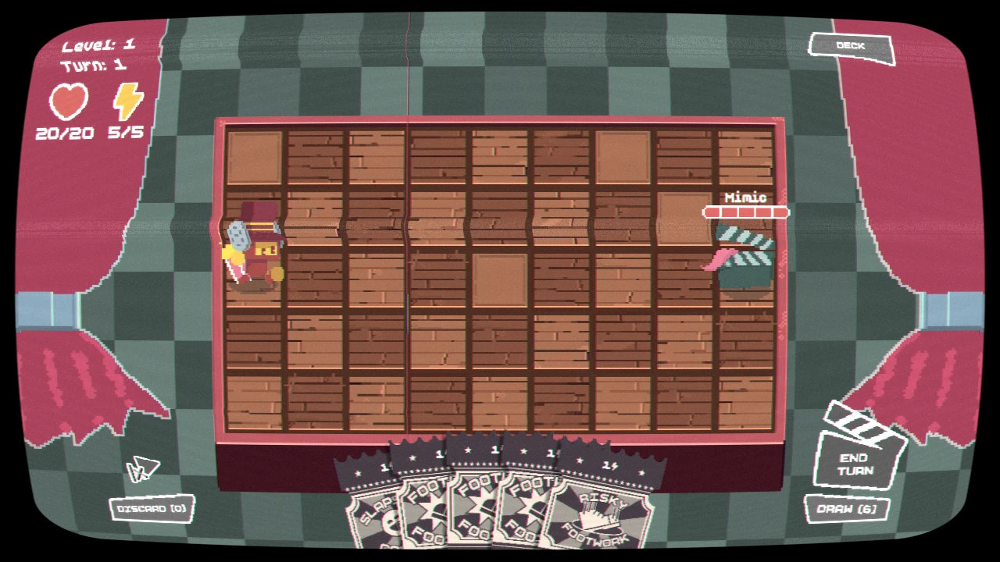

Game / Tactical card strategy
Cards, Camera, Action!
A strategy card game where enemies reveal their next five moves—and your cards can rewrite their plans. I was one of two credited programmers.
 Godot
Godot- GDScript
My contribution
I was one of two credited programmers on the team behind Cards, Camera, Action!, which won 1st place in GameVidia at ARKAVIDIA 10.0 in 2026.